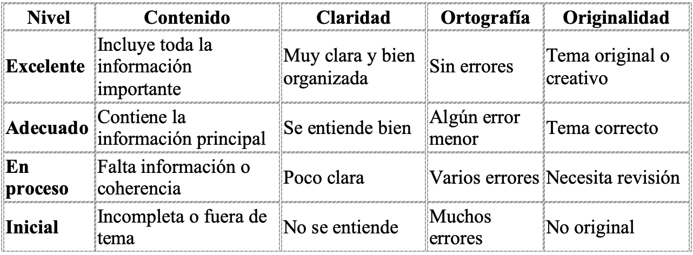

Información inicial
“Antes de escribir, necesitamos conocer cómo se cuenta el mundo.”
Duración orientativa: 2–3 semanas (unas 15 sesiones).
Ámbitos trabajados: Lengua Castellana y Literatura · Geografía e Historia · Valores Éticos.
Competencias clave: CCL · CD · CPSAA · CC · CE.
🧭 Objetivo de esta fase:
Descubrir cómo funciona un periódico, qué tipos de noticias existen y qué papel tienen los periodistas en la sociedad.
Aprenderemos a reconocer las secciones de un medio, analizar titulares y preparar el primer producto de aula: una mini noticia sobre la vida del centro o el entorno.
♿ Recuerda: puedes escuchar los textos, ampliar la letra o enviar tu trabajo en formato audio si lo necesitas.
¿Qué vamos a hacer?
Cada día, millones de personas leen noticias en papel, en la tele, en el móvil o en redes sociales.
Pero… ¿alguna vez te has preguntado quién las escribe y cómo se decide qué contar?
En esta primera parte del proyecto vas a descubrir **cómo trabaja un periodista**,
qué partes tiene un periódico y cómo se estructura una noticia.
📸 Tu misión: convertirte en reportero o reportera del IES.
Antes de empezar, recuerda:
Un periódico está formado por distintas secciones.
Cada una tiene una función distinta y trata temas específicos.
🗞️ Secciones principales:
- Portada
- Sociedad
- Cultura
- Deportes
- Opinión
- Internacional
- Ocio / Agenda
Actividad 1. Descubrimos las secciones de un periódico.
Cada periódico está dividido en secciones, y cada una tiene una función distinta.
Lee las preguntas y elige la opción correcta.
💡 Recuerda: la “Portada” muestra lo más importante; “Cultura” habla de arte y literatura; “Deportes” cuenta resultados y campeonatos; “Sociedad” trata temas cotidianos y locales; y en “Opinión” los periodistas expresan su punto de vista.
Actividad 2. Crea tu primera mini-noticia.
Imagina que eres periodista de tu centro.
Piensa en algo que haya ocurrido recientemente y redacta una mini noticia (5–6 líneas).
🧭 Estructura:
Titular → qué ha ocurrido.
Entradilla → un resumen breve.
Cuerpo → explica qué, quién, cuándo, dónde y por qué.
📤 Entrega: sube tu noticia a Teams o al Aula Virtual.
💡 Ejemplo modelo:
“El IES Roces celebra su Feria del Libro con talleres y lecturas compartidas.”
Los alumnos de 3.º ESO organizaron el pasado jueves una feria del libro para fomentar la lectura.
Durante la mañana se celebraron juegos literarios y lecturas públicas.
La iniciativa fue coordinada por el ámbito lingüístico y social.

Evaluación de la fase 1
📊 ¿Cómo se evaluará esta parte?
Actividad 1: test automático sobre las secciones.
Actividad 2: mini noticia evaluada con una rúbrica.
Participación y autoevaluación final.
✅ Recuerda: las rúbricas estarán visibles en cada tarea.
Contenido DUA
♿ Recuerda: puedes escuchar los textos, ampliar la letra o enviar tu trabajo en formato audio si lo necesitas.